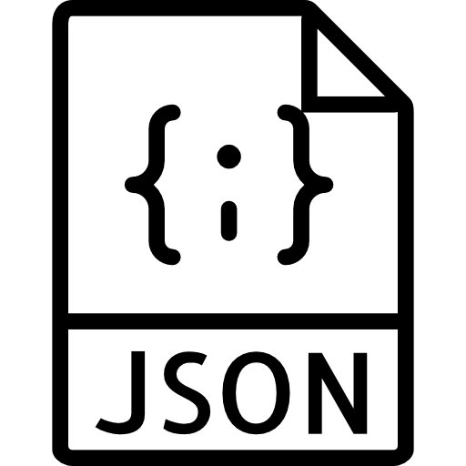

Competencias
Linux

Experiencia con Debian, Ubuntu, RHEL, CentOS y Fedora. Administración de servidores, configuración y mantenimiento de servicios, scripting y automatización con Bash.
Redes
Conocimientos en diseño y administración de redes, protocolos TCP/IP, DNS, DHCP y seguridad de redes.
Bases de datos

Conocimientos en bases de datos relacionales y no relacionales, diseño, administración y optimización de consultas (OracleDB, PostgreSQL, MongoDB).
Proxmox

Experiencia con tecnologías de virtualización con Proxmox. Configuración y administración de máquinas virtuales, redes virtuales y almacenamiento. Conocimientos en migración de máquinas virtuales y gestión de clústeres.
OpenStack

Experiencia trabajando con entornos cloud basados en OpenStack, gestionando recursos de computación, red y almacenamiento dentro de infraestructuras virtualizadas.
ElasticSearch

Uso de Elasticsearch para almacenamiento, indexación y análisis de datos, especialmente orientado a análisis de logs y monitorización de sistemas.
Ansible

Automatización de tareas de administración de sistemas y despliegue de configuraciones utilizando Ansible y playbooks para gestionar infraestructuras de forma eficiente.
Docker

Uso de Docker para crear, desplegar y gestionar contenedores, facilitando el desarrollo, pruebas y ejecución de aplicaciones en entornos aislados.
Python

Desarrollo de scripts y herramientas en Python para automatizar tareas administrativas, procesamiento de datos y creación de utilidades para sistemas.
JSON

Uso de JSON para estructuración e intercambio de datos en APIs, configuraciones de servicios y procesamiento de información entre aplicaciones.
Grafana

Creación y gestión de dashboards en Grafana para monitorizar métricas de sistemas, visualizar datos y facilitar el análisis de rendimiento y posibles amenazas.
VPN
Configuración y gestión de conexiones VPN para acceso seguro a infraestructuras y redes privadas, garantizando comunicaciones protegidas.